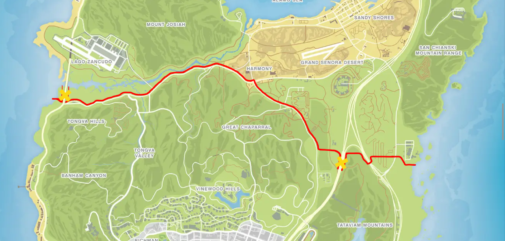

Operationeel Werkgebied
De Koninklijke Marechaussee van Hollandia RP is verantwoordelijk voor de handhaving van orde, veiligheid en grenscontrole binnen aangewezen gebieden op de map. De Koninklijke Marechaussee heeft de leiding boven de onderstaande rode lijn. Bij de kruisjes die zichtbaar zijn op de map zit een grenspost met hoge hekken. Er is naast deze grensposten een onbekende smokkelroute. De Koninklijke Marechaussee bewaakt de grenzen. Ook heeft de Koninklijke Marechaussee het nieuwe Roxwood eiland als werkgebied. Op dat Roxwood eiland zit ook het Koninklijke Marechaussee bureau. Daarnaast houd de Koninklijke Marechaussee ook toezicht op de haven en vliegvelden. Het is toegestaan voor de politie om in Koninklijke Marechaussee gebieden te opereren, mits hier noodzaak voor is. Dit dient wel altijd met toestemming te gebeuren van de andere partij. Het betekend dus dat de Koninklijke Marechaussee ook kan patrouilleren in het politie gebied.

Werkgebieden
Noorden
Boven de grenslijn aangegeven op de bovenstaande afbeelding is de Koninklijke Marechaussee standaard actief.
Roxwood
Roxwood staat onder toezicht van de Koninklijke Marechaussee.
Grensovergangen
Uitvoering van grenscontroles, identiteitscontroles en aanhoudingen bij overtredingen.
Bevoegdheden
Identiteitscontrole
De Marechaussee is bevoegd om iedere burger te verzoeken zich te identificeren bij controle of staandehouding.
Aanhouding & Inbeslagname
Bij strafbare feiten mogen personen worden aangehouden en goederen in beslag worden genomen conform het Wetboek.
Grensbewaking
Controle op illegale binnenkomst, smokkel, wapenhandel en verboden goederen.
Operaties
Het opereren zonder samenspraak met de politie is toegestaan als Marechaussee.
Transport
Het transporteren van verdachten naar de gevangenis.
Samenwerking
Samenwerking met Politie, DSI en andere hulpdiensten binnen gezamenlijke operaties.